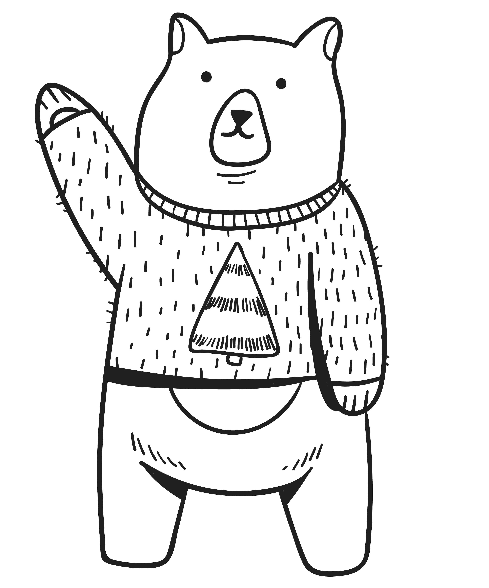
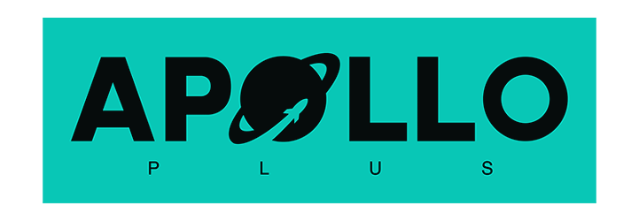

I am a Senior Software Developer based in Brașov, Romania, ready to be your trusted tech partner.
Driven by over a decade of experience as a Senior Software Developer, I’m passionate about crafting innovative and scalable web applications. Over the years, I’ve learned that great code starts with a clear idea and a genuine purpose. I love taking a rough concept and shaping it into clean, useful software that makes life simpler for others.
As a Python specialist, I excel at navigating complex challenges and delivering impactful results through agile methodologies. Collaboration and building strong professional relationships are of great importance to me.
Beyond the world of code, my true passion is cycling. Constantly seeking new routes, I'm drawn by the chance to immerse myself in nature and find a deep connection, far from the digital noise. I believe this dedicated time in nature, free from distractions, provides invaluable mental clarity that significantly sharpens my focus and fuels my problem-solving abilities when I'm back at my desk.
